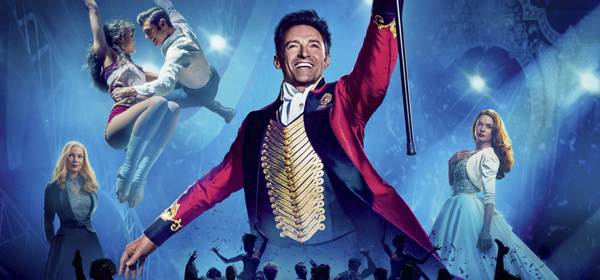
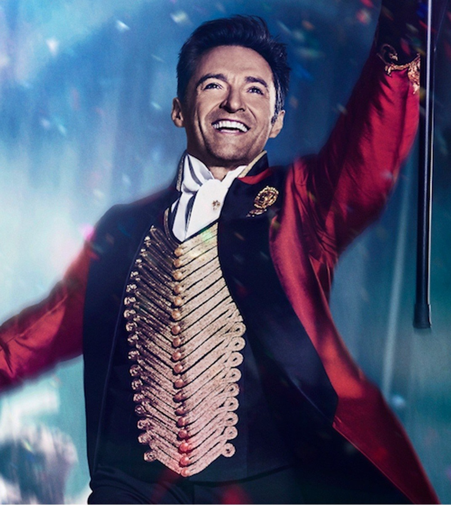
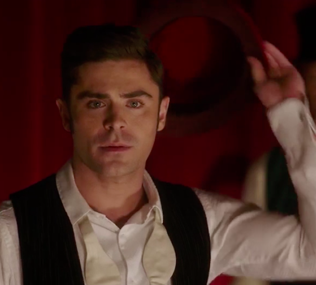
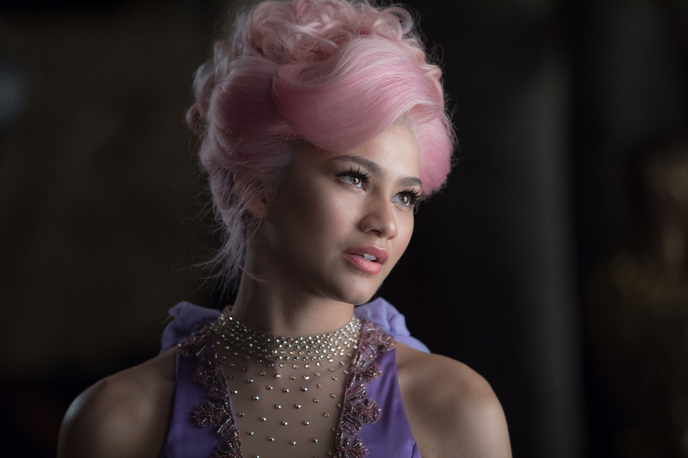
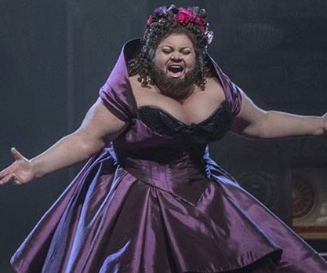

Sinopsis
La pelicula es un musical que es basa en la vida de Phineas Taylor Barnum (1810-1891) (Hugh Jackman) un home normal que funda el Circ Ringling Brothers. L'empresa en la que treballa cau en bancarrota i perd el seu treball però a la seva esposa Charity li diu que no pateixi que aviat trobarà una solució. Així doncs va crear un museu de coses extranyes, pero com no va triunfar, va crear un espectacle de coses extranyes i això va ser un èxit de taquilla. I si vols saber més hauras de veure-la.
Director

Michael Gracey es un director Australià, que va ser el director de "El Gran Showman" tot i que ha dirigit altres grans produccions com Rocketman tot i que finalment va ser sustituit per "Dexter Fletcher", té previst dirigir el film d'animació de la serie per a nens "Lady Bug i Cat-Noir el despertar.
Personatges
Phineas Taylor Barnum

Phineas Taylor Barnum interpretat per Hugh Jackman es el protagonista d'aquesta historia i explica la historia d'un home del segle 19 que es queda sense treball i ha de mantenir la seva familia i ho fa creant el Circ Ringling Brothers.
Philip Carlyle

Philip Carlyle interpretat per Zac Efron es l'ajudant i gran amic del protagonista Phineas Taylor Barnum.
Anne Wheeler

Anne Wheeler interpretada per Zendaya, es una de les persones que actuaba en el Circ, pero amb la diferencia que ella i Philip Carlyle acaben enamorant-se.
Charity Barnum

Charity Barnum interpretada per Michelle Williams, es l'esposa del protagonista Phineas.
Lettie Lutz

Lettie Lutz interpretada per Keala Settle va ser una de les que actuaba al Circ, i va ser galardonada amb el premi Tony a la millor actriu de repart.
Historia Real
La pelicula de "El Gran Showman" esta basada en una historia real, es a dir en la vida de P.T. Barnum, el fundador del Circ Ringling Brothers el que va ser el circ més famos d'Estats Units desde 1871 fins al seu tencament al 2017. Barnum va néixer el 5 de juliol de 1810, a Bethel, Connecticut. Des dels 12 anys va començar a vendre productes, com dolços i alcohol. Als 20 anys va pagar mil dòlars per Joice Heth, una esclava de tercera edat, i va inventar la història que ella tenia 161 anys i que havia estat ex mainadera de George Washington. Tots dos van viatjar junts pel país explicant la seva gran història, aconseguint 1.500 dòlars per setmana. Quan Joice Heth va morir a l'any següent, es van arribar a vendre entrades per a la seva autòpsia, on es va estimar que tenia 90 anys menys dels que Barnum havia assegurat. Si alguna cosa sabia fer bé Barnum, era treure el màxim benefici de la ignorància i innocència de les persones.
En el seu freak-show, no faltaven tot tipus de deformitats. I si no n'hi havia, ell les inventava. Entre els seus rareses havia la mujere barbuda, sirenes, la dona simi, l'home més fort de l'món o el més diminut.
El seu show ambulant continuaria per tot Estats Units fins a fundar un museu en 1941 anomenat "Barnum 's American Museum". No va tenir cap escrúpol a mentir i falsificar per aconseguir més espectadors. Un dels seus majors fraus va ser la sirena de Fiji, considerat el major engany de l'Circ Barnum. Barnum va intentar que un naturalista certifiqués que era una sirena autèntica sense aconseguir-ho, però això no li va impedir exhibir-la.